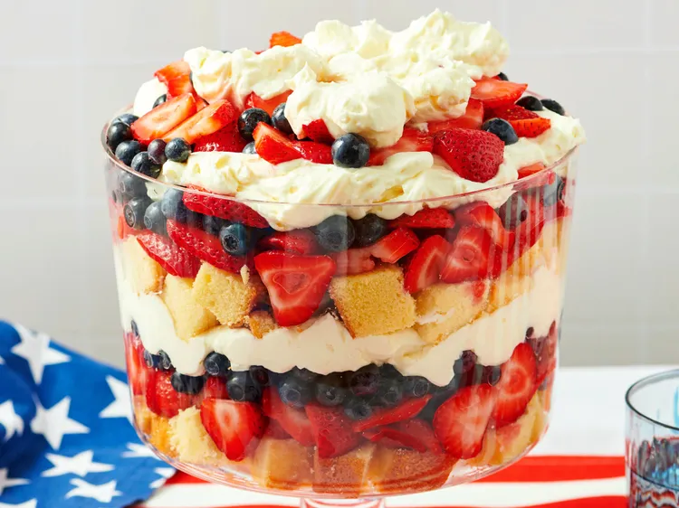

Gather all ingredients. Sprinkle strawberries with sugar in a bowl; stir to distribute sugar, and set aside. Chill a large metal mixing bowl and beaters from an electric mixer. Pour cream into the chilled mixing bowl, and add lemon yogurt, pudding mix, and about 1 tablespoon of coconut rum; beat until fluffy with an electric mixer set on medium speed. Repeat the layers several times, ending with a layer of strawberries sprinkled with blueberries and reserving about 1 cup of whipped cream; top the trifle with dollops of whipped cream to serve. Refrigerate leftovers.